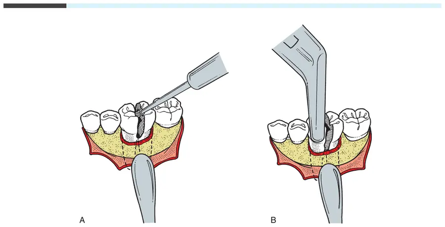
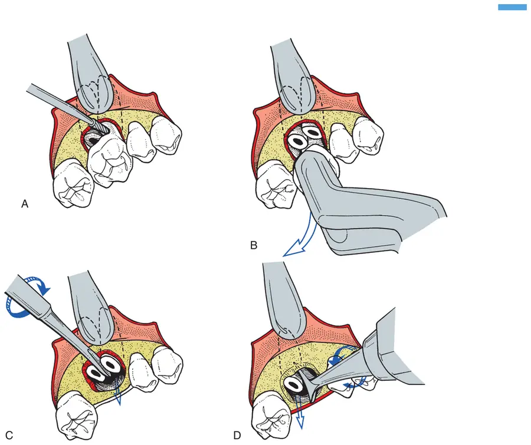

نسخه استخراجشده؛ ترجمه یا تأیید علمی انجام نشده است. وضعیت: captured
جملهای که کل نگرش را عوض میکند: کشیدن جراحی نباید فقط برای آخرین چاره نگه داشته شود. تکنیک باز که هوشمندانه به کار رود میتواند محافظهکارانهتر، کمعارضهتر و سریعتر از کشیدن بسته باشد. تکنیک فورسپس که نیروی زیاد بخواهد، ممکن است نهفقط دندان بلکه مقدار زیادی استخوان مجاور و گاهی کف سینوس ماگزیلاری را هم بیرون بیاورد. عوارضِ قطعات استخوانی که با تکنیک «محافظهکارانه»ی بسته عملاً از فک کنده میشوند، میتواند بهمراتب از عوارض یک کشیدن جراحیِ درست بیشتر باشد.

قاعدهی کلی: هر جا احتمال نیاز به نیروی بیش از حد را پیشبینی کردی، به کشیدن جراحی انتخابی فکر کن. «بیش از حد» یعنی نیرویی که احتمالاً به شکستن استخوان، ریشه یا هر دو میانجامد.
اندیکاسیونهای کشیدن باز:
گام اول در هر دو: رفلکشن فلپ موکوپریوستئالِ بهقدر کافی بزرگ. در بیشتر موقعیتها فلپ پاکتیِ دو دندان جلو و یک دندان عقب کافی است؛ برش رهاساز اگر لازم شد باید دستکم یک دندان جلوتر از محل کشیدن باشد.

تکریشه — چهار گزینه، بهترتیب از کمتهاجم به بیشتر:
اگر باز هم سخت بود: purchase point. با بور در آپیکالیترین بخش ناحیهی برداشت استخوان، حفرهای به قطر حدود ۳ میلیمتر و به عمق کافی برای ورود ابزار. سپس الواتور سنگین مثل Crane pick ریشه را بلند میکند. برداشت استخوان را به همان مقدار لازم محدود کن تا استخوان برای ایمپلنت احتمالی حفظ شود.
پایان کار: لبههای استخوان را چک کن — اگر تیزند با سوهان صاف کن (با برگرداندن فلپ و لمس با انگشت میشود تیزی را سنجید). برداشتن استخوان با رانژور اینجا بهندرت اندیکه است چون رانژور در این شرایط بیش از حد استخوان برمیدارد. کل میدان با سالین استریل فراوان شسته شود، با توجه ویژه به پایینترین بخش فلپ در محل اتصالش به استخوان — محل شایع نشستن دبری، بهویژه در مندیبل.
اگر دبری با کورتاژ یا شستوشو برداشته نشود، میتواند تأخیر التیام یا حتی آبسهی کوچک سابپریوستئال در ۳ تا ۴ هفتهی بعد بدهد. فلپ سر جایش برگردانده و با ابریشم سیاه ۳-۰ یا کرومیک بخیه میشود؛ اگر برش درست طراحی شده باشد، خط بخیه روی استخوان سالم تکیه دارد.
چندریشه — تفاوت اصلی: تقسیم دندان با بور. اگر تاج سالم است، تاج طوری سکشن میشود که خارج کردن ریشهها آسان شود؛ اگر تاج نیست، هدف جدا کردن ریشهها است تا بیرون آوردنشان با الواتور راحتتر شود. سکشن با هندپیس مستقیم و بور راند ۸ یا فیشور ۵۵۷ یا ۷۰۳ زیر شستوشوی فراوان.
وقتی با الواتور مستقیم روی ریشههای مولر بالا کار میکنی، یادت باشد سینوس ماگزیلا ممکن است نزدیک باشد — نیروهای آپیکالی باید بهدقت کنترل شوند. نیروی الواتور مستقیم باید به سمت کام باشد و فشار آپیکالی محدودتر.